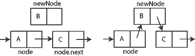
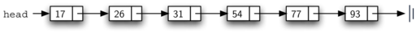

Estructuras de Datos y Algoritmos II
Clase 1
versión imprimible o pfd
Estructuras de Datos y Algoritmos II
Clase 1
¿Por qué?
Problema
El placard
El placard
¿qué pasa si tenemos sólo un estante, laaaaargo, pero que no entra mas de una prenda de alto ?
¿y si la puerta es muy pequeña, y adentro hay un perchero giratorio?
condicionantes, requerimientos
¿Qué es una estructura de datos?
¿Qué es una estructura de datos?
“ Una estructura de datos es una forma particular de organizar la información en una computadora de manera tal que pueda se usada eficientemente. ” Paul E. Black - "Dictionary of Algorithms and Data Structures"
“ Una estructura de datos es una forma de almacenar y organizar información para facilitar el acceso y las modificaciones. ”Propiedades Reglas Restricciones
[Thomas H. Cormen, Charles E. Leiserson, Ronald L. Rivest, Clifford Stein] - "Introduction to algorithms"
¿Qué es un algoritmo?
“ un algoritmo es un procedimiento computacional bien definido que toma un valor/es como entrada y produce un valor/es como salida. Es por lo tanto una secuencia de pasos que transforman una entrada en una salida. ”
“ También puede verse como una herramienta para resolver un problema computacional bien especificado. ”
¿Por qué?
“ frecuentemente tendremos que identificar y balancear las ventajas y desventajas acerca de una solución. Como científicos de la computación, además de nuestra habiliadad de resolver problemas, también necesitaremos conocer herramientas y técnicas para evaluar dichas soluciones. A la larga, generalemente existen muchas formas de resolver un problema determinado. Encontrar una solución y decidir si es una buena solución, son tareas que realizaremos una y otra vez. ” "Introduction to algorithms", Thomas H. Cormen, Charles E. Leiserson, Ronald L. Rivest, Clifford Stein
“ (...) No existe una estructura de datos que funcione bien para todos los propósitos, por lo tanto es importante conocer las fortalezas y limitaciones de varias de ellas. ” ibidem
¿Cómo determinamos qué estructura de datos y qué algoritmos son mejores para solucionar un problema determinado?
No vamos a estudiar todas estructuras de datos y todos los tipos de algoritmos. El propósito de la materia es construir herramientas conceptuales y prácticas que aporten a responder estas preguntas.
Estructuras de Datos y Algoritmos II
Profesores:
Emanuel Borda
Fernando Martínez
Página:
Temas y fechas
| Clase | Día | Tema | Practica |
|---|---|---|---|
| 1 | 07/04/2015 | Listas | #1 Listas |
| 2 | 14/04/2015 | Arboles Binarios | #2 Arboles Binarios |
| 3 | 21/04/2015 | Arboles Generales | #3 Arboles Generales |
| 4 | 21/04/2015 | Arboles AVL | |
| 5 | 28/04/2015 | Tiempo de Ejecución | #4 Tiempo de Ejecución |
| 6 | 05/05/2015 | Tiempo de Ejecucion | |
| 7 | 12/05/2015 | Grafos | #5 Grafos |
| 8 | 19/05/2015 | Grafos | |
| 9 | 26/05/2015 | Consulta Parcial/ Clase repaso | |
| 10 | 02/06/2015 | Parcial 1era Fecha | |
| 11 | 09/06/2015 | Muestra Parcial y Consulta | |
| 12 | 16/06/2015 | 1er Recuperatorio | |
| 13 | 23/06/2015 | Muestra 1er Rec y consulta | |
| 14 | 30/06/2015 | 2do Recuperatorio |
Listas
Listas
¿Qué es una lista?
Definición
Una lista es una coleccion de elementos donde cada uno mantiene una posicion relativa respecto a los otros. Es decir, entre los elementos que la componen existe una relación de orden (primero, segundo, tercero... último).
Estructura lineal, tiene un principio y un final.
Es una estructura de datos simple que puede servir para construir otras estructuras de datos más complejas

¿Qué cosas podemos hacer con una lista?
¿de que manera podemos acceder a qué datos?
¿Cómo la modificamos?
Operaciones sobre listas
- size
- empty
- first()
- last()
- get(index)
- find(item)
- index(item)
- includes(item)
- insert(item, position)
- append(item)
- prepend(item)
- remove(item)
- clear()
Tipos de listas
Dependiendo cómo se organicen los elementos podemos plantear distintos tipos de listas:
- lista enlazada simple (linked list)
- lista enlazada doble (double linked list)
- lista circular (circular list)
- lista no ordenada (unordered)
- lista ordenada (sorted)
Lista enlazada simple (linked list)
Analicemos algunas operaciones...
- recorrido/búsqueda
- inserción
- eliminación
Lista enlazada simple (linked list)
Insertar
Lista enlazada simple (linked list)
Remover

Lista no ordenada (unordered list)
Lista ordenada (sorted list)
Comparemos algunas operaciones
¿Que pasa con la operación insert(item, index)?
Otras estructuras lineales
- pilas (stack)
- colas (queue)
- colas dobles (dequeue)
- arreglos (array) (estáticos y dinámicos)
pilas
operaciones:
- push(item)
- pop()
- top()
colas
Colas
operaciones:
- push(item)
- pop()
- top() (o first())
- last()
podemos decir que tanto pilas como colas son un subconjunto de las listas
Arreglos (Array)
Estructura de datos de bajo nivel
Almacena un conjunto de objetos en posiciones contiguas de memoria.
Indexada. Es decir puede accederse a cada uno de los elementos mediante un índice (suelen ser numéricos)
Pueden ser estáticos o dinámicos.

operaciones básicas:
- acceder a un valor
(suele escribirse a[1]) - setear un valor
(suele escribirse como una asignacion a[1] = item) - size o length
Entre las propiedades mas importantes encontramos: acceso directo
(simplemente es necesario acceder a la posicion de memoria que contiene el valor que quiero leer)
comparemos la operación de inserción en un arreglo y en una lista enlazada simple
Fin
¿Preguntas?